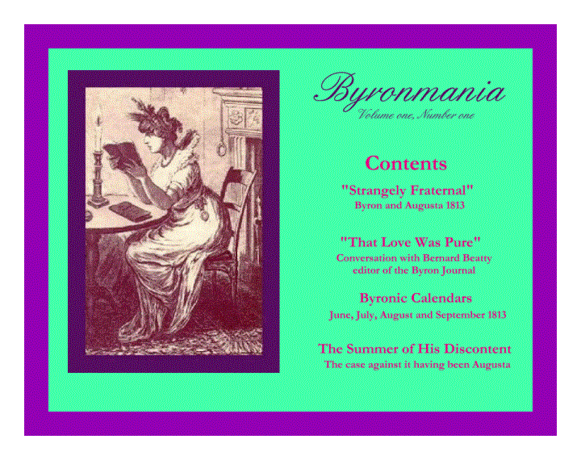
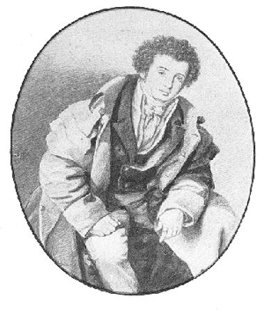

Back
to: BYRONMANIA E-JOURNAL
Back
to: BYRONMANIA.COM


George
Gordon Byron, Lord Byron
Sixth
Baron Byron of Rochdale
WELCOME TO
This electronic journal is intended to be
an environment in which
Byron-maniacs around the world can publish their
thoughts
It is a place for more extended writing
than a chat group can accommodate
A place for speculation, conversation,
adoration
More accessible and informal than an
academic journal
You don’t have to be famous, respected -
or even old - to contribute
You just have to have something interesting
to say and be able to say it - clearly
Or have an interesting question to ask.
Or be able to answer a question with some
authority.
About the people, places, politics,
religions
scrapes, japes and poesies associated
with
the real, original,
Regency Romantic hero
in boots,
pantaloons
and many caped coat,
athlete,
revolutionary,
philosopher,
poet
born deformed,
victim of child abuse,
advocate of paederasty,
Old English Baron
rake, debtor,
hounded by the press,
ostracised because of rumours of sexual
deviations and irreligion,
abandoned by his wife,
source of the Vampyre,
legendary bi-sexual lover
and
freedom fighter.
Volume one, Number one
“Strangely Fraternal”
“you would think me grown strangely fraternal” Byron to
Augusta - June 26, 1813
Almost
everyone knows something about Lord Byron.
Unfortunately,
like many things “everyone knows” these are, at best, distortions of the facts
“He was one of the Romantic poets - like Wordsworth, Coleridge and
Shelley.”
Byron
hated the “Lakers” as he called Wordsworth and the similar Romantic poets. He admired classic form and rules, the
poetry of Pope and satire. Shelley
became a personal friend and he influenced Byron’s poetry.
“His early poems are trash.”
Many of
his earliest poems are funny and lovely - and display his trademark
facetiousness and passionate emotion.
“He was a drunk and drug addict- they all were - smoked opium.”
He was
not a heavy drinker. He drank wine with
dinner, champagne with women and brandy with friends. He smoked cigars and took laudanum when ill - to doctor’s
prescription. After returning from
Turkey in 1811, he drank only water and did not eat meat. His contemporaries criticized him for being
abstemious.
“He had a clubbed foot.”
He had
a congenital defect in his leg (the right - probably - although there is
argument about which one) that caused his foot to turn in. He had poor medical treatment as a child
that aggravated the problem. He walked
with a limp and couldn’t (or wouldn’t) dance - especially not the waltz, but he
could run and played cricket for Harrow against Rugby.
“He was a lonely outsider - had no friends - nobody knew him.”
His
school and college friends were aristocrats and the son’s of politicians and
were devoted to him. He had a
widespread reputation as a rake and was elected a member of the gambling club
Watiers. He was one of the original
Dandies and a friend of Beau Brummell. He had a solid reputation as a poet by
the age of twenty.
“He was homosexual.”
He had
passionate “romantic” friendships with other boys at school at Harrow. He fell in love with John Edelston, a boy
chorister in the church at Cambridge.
He discussed “paederasty” and proposed writing a “treatise” on it. When
he was in Greece he wrote letters to England about sexual conquests of boys and
his last, but unrequited passion was for a Greek boy of fifteen. He also “had “ several hundred women - so
bisexual or hyper-sexual is more correct.
“Lady Caroline Lamb wrote that Byron was “mad, bad and dangerous to
know.”
Lady
Morgan wrote it. She said
Caroline Lamb had told her she had written
“mad, bad and dangerous to know” in her diary the first evening she saw
Byron.
“Byron was a cad and abandoned his heartbroken lover, Lady Caroline
Lamb.”
Caroline
Lamb was older than Byron and a married woman.
She seduced him when he became a famous and admired poet. She was bold about it and wanted everyone to
know of her “conquest”. They were
lovers for about three months but her behaviour embarrassed Byron and her
family, especially because her husband was a politician. Her mother in-law,
Lady Melbourne, befriended Byron and convinced him to break off the relationship. Her family take her away to Ireland to break
up their love affair and Byron moved on to be lover of the famous beauty Lady
Oxford.
“He was exiled to Europe.”
He left
England because he wanted to. He was
being hounded by the press and public after his separation from his wife, but
he had been planning to leave for three or four years, and intended to return.
He preferred to live in Italy because of the climate and because it was
inexpensive.
“He was very extravagant, but miserly to friends”
He was
in debt all his life. He did not have a
great fortune even though he had an estate of thousands of acres because of law
suits and low rents. Just before he
died the law suits were settled and he was rich. Byron had got into debt when he was seventeen years old and had
borrowed money at exorbitant rates. He
took many years to pay it off, which required the selling of the family
estates. None the less, he was very
generous to family, friends, and strangers and embarrassed when he could not
afford to help people financially.
“He slept with his sister.”
He
loved his sister - and wrote several poems about her love for him and a verse
drama about incestuous love. He wrote many passionate letters to her from
Italy. Did he make love with her?
Read
the rest of this journal and decide for yourself.
January 22, 1998
A Conversation
with Bernard Beatty of the University of Liverpool,
editor
of the Byron Journal ,
on implications of
Childe Harold’s “pure love” for his sister
A.R.M.:
Byron changed his mind but I don't think he ever lied -----
using Childe Harold as evidence ---- he stated in stanza LV of Canto III
“though unwed, That love was pure” of his love for his sister ---- so I've always believed
it WAS so, and probably she was deprived, poor thing ! ! ! !
It's always the unconsummated loves that burn into the soul. In which
case, what DID bother him and Lady M. in the summer of 1813?
B.B.
I don't see that 'That love was pure' necessarily implies
the absence of sexual relations. He may simply have meant 'wholly meant', 'not
lustful' 'still continuing' 'bound up with an idea of purity'.
In the ‘Thyrza’ poems he talks of a pure kiss which forbore
the warmer wish.
I suppose that tells for you since it may imply that the
warmer wish would not be pure but it could imply the possibility of the
conjunction of purity and intercourse. Byron calls (I think, doesn't he?) the
love of Juan and Haidee 'pure' but that is certainly sexual.
So the argument still has to be made there.
A.R.M.
Maybe so - but I
think that Juan and Haidee have 'pure hearts' not a 'pure love'.
In my edition of C.H.[Childe Harold’s Pilgrimage] the word 'That'
is italicised - indicating a difference from other loves that were not
'pure'. He would have been well aware
at that time that many people believed the opposite of his love for Augusta and
may have been trying to put a 'spin' on things. He was usually, however,
painfully truthful to the point of masochism.
Of all men I doubt Byron would separate lust and physical
intercourse. He seems very clear about
it, and not very troubled by it.
Lust and love, on the other hand really screwed him up (pun
intended). He loved John Edelston emotionally, physically, but apparently not
“warmly “(meaning 'carnal knowledge'?). He "esteemed" Annabella and
'had her on the sofa before dinner' then got her with child in no time ('pure'
because married?). He went to Venice
and (calling a whore a whore) indulged in his hobby of 'carnal recreation' -
and then along came Teresa who wouldn't even accept a brooch, but jumped him as
fast as she could - and inventively too - and he found himself very close to
becoming the whore in that relationship himself. But he loved her and that made
it all right - but definitely not 'pure' in any way.
B.B.
The present Pope annoyed lots of people by saying that some
marital intercourse was lustful and some wasn't. He wasn't saying anything new.
Aquinas argues with great perspicacity that it would be very difficult to get
rid of an intrinsically separable concupiscence in love-making though you could
very nearly do so (before the Fall, concupiscence would be wholly incorporated
into amor, and sex would be much better-- i.e. more pleasurable).
I suspect Lord B would agree with this. Probably he entertained
contradictory views on the coincidence of purity and sexual love (or took the
advantage of available rhetorical forms of expression).
So the argument still has to be made there.
A.R.M.
I'm trying ! ! !
When it gets down to
defining 'the conjunction of purity and intercourse' you have an argument to
make too ! ! ! ! with every prude and puritan in the world on the other side.
What then would be impure? sexual contact without love I suppose - like Byron
with his wife (at least at first).
The Pope's observation mystifies me - I can't comprehend
pleasurable lust free 'amor'ous sexual intercourse in or out of marriage. What
would this loving but cold sex be like? What do they DO of an evening? If it exists it seems ghoulish - and
deviant. It doesn't sound as if old St.
Thomas A. managed it, either.
Why are the Fathers of the Church (Augustine, St. Tom, His
Current Holiness) so disturbed by lust anyway?
To be upset by it, it must not be godly, if not godly then of evil, if
of evil then of the Devil.
If one believes in the personification of evil as having
concrete or even psychological powers then monotheism has to be abandoned and
with it the teachings of Christ. This
would seem a greater danger than ecstasy of the flesh.
Bernini did a nice job of summing it all up in his altar
piece of St. Teresa. Have you read that stuff of the ecstatic nuns? - decidedly
concupiscent - all about dissolving into the body of Christ as his bride. (a
metaphor? - balderdash ! ! ! )
Love without lust is easy - and everywhere - many women
claim to prefer it. Lust without love? I think our hero called it 'carnal
recreation'- In my opinion, he was comfortably consistent in his paradoxical
views.
B.B.
See above. Neuha in The Island is, if not pure in the sense
of Aurora, certainly not impure. cf Angiolina in Marino Faliero (despite
Steno's accusation). Parisina's love is not pure cf. Paolo and Francesca. an
example that influenced Byron a lot (I think) is Dryden's version of
Boccaccio's 'Sigismonda and Guiscardo' (Boccaccio in Dryden's Fables).
Sigismonda is a model for Marina in The Two Foscari. She is both pure and
aggressively sexual.
A.R.M.
I am nervous analysing the MAN's opinions by analysing the
POET's characters.
I much prefer to rely on letters and journals to get at his
(personal) thoughts. My reasons are exactly those 'rhetorical forms of
expression' you referred to above.
Hasn't our discussion of "pure" deteriorated into
semantics? Denotations and connotations
shift with the wind.
B.B.
I
don't agree with you about connotations. WE disagree. It's not a matter of
psyche (connotations, different experience) but of possible argument-- we don't
get into the merely subjective that quick.
I don't agree also, I'm afraid, that we get at Byron's views
more exactly from his prose rather than his poetry. Of course, poetry is not
the straight expression of his views. But conversely, the straight expression
of views,-for anyone but especially Byron--is itself stylised and extremely
limited it only uses a small bit of him. Poetry uses more and reveals more.
I've always thought this. We should read his prose in the
light of his poetry and not the other way round.
A.R.M.
I am a painter. I have strong opinions of the relationship
between artists, their creations and their audience. My work, if done to be
sold, is not the same as work done for myself. It takes the audience into
account, even if only unconsciously.
When we approach a work of art, as audience, we bring along our
vocabulary - and read into it what we can.
The essence of genius, to me, is the ability to create works
that resonate with many audiences.
Byron was - is - a genius. I
'know' what he meant by 'That love was pure', and so do you, but we disagree
about it because our connotations are different. I think the only word of those
four that can be easily agreed on is 'was' ! ! ! ! ! !
But for me, as a lover of Lord Byron the man, not the poet,
those words are a message across the centuries. The same words about 'Thyrsa' are too. He is fiercely proud, and
does not want to be misunderstood.
B.B.
I seem to have become ultra rational in a way. Yes language
is slippery and resonates differently but the relativism you imply is simply
not so -language can't work at all if we were to take that absolutely
seriously.
Thus now there is a that in which we talk (can't point to it
but if it wasn't there there could not even be a talk which claimed to be
relativist and connotatory). The old word for this 'that in which' was 'truth'
and I don't see that we can do without it. Byron, especially in Don Juan,
insists on the slippery doubt-filled procedures of thought and language but,
equally, he insists on the truth of his poetry and is careful to relate
imagination to fact. He detested Wordsworth and distrusted Shelley and Keats's poetry
because they drove a wedge between these things. He did not like an appeal to
art which implied simple subjectivity or the unmitigated play of connotation.
So I suppose that does get us back to where we started. . .
But in the process we seem to have blundered into a larger question about Byron
and other things.
e-mail
conversation January 1997
Byronic Calendars
“The Summer of His Discontent”
June, July, August
and
September
1813
|
Sun |
Mon |
Tue |
Wed |
Thu |
Fri |
Sat |
|
Where he is Who he loves What he is writing What he is doing Where he plans to go How he feels |
|
1 4 Bennet Street, London Lady Oxford The Giaour first
edition about to be printed Naples with
the Oxfords |
2 4 Bennet Street Lady Oxford The Giaour Naples |
3 to Salthill Lady Oxford The Giaour revisions Naples |
4 Salthill Lady Oxford The Giaour Naples |
5 Salthill Lady Oxford The Giaour Naples |
|
6 Salthill Lady Oxford The Giaour Naples |
7 Salthill Lady Oxford The Giaour Naples |
8 4 Bennet Street Lady Oxford The Giaour Naples robust health “fattening
on misfortune” |
9 Salthill Lady Oxford Naples |
10 Salthill Lady Oxford Naples |
11 Salthill Lady Oxford Naples |
12 Salthill Lady Oxford Naples with the Oxfords selling his books |
|
13 Maidenhead Lady Oxford Naples |
14 Portsmouth Lady Oxford Naples |
15 Portsmouth Lady Oxford Naples |
16 Portsmouth Lady Oxford Naples |
17 4 Bennet Street Lady Oxford The Levant with Dr
William Clark anatomist at Cambridge |
18 4 Bennet Street Lady Oxford The Levant |
19 4 Bennet Street Lady Oxford The Giaour revisions The Levant |
|
20 4 Bennet Street Lady Oxford The Giaour The Levant |
21 4 Bennet Street Mme De Stael met
at dinner |
22 4 Bennet Street Lady Oxford The Giaour The Levant |
23 4 Bennet Street Lady Oxford The Levant to Ly Westmorland defends
himself against accusations by Caroline Lamb |
24 4 Bennet Street Lady Oxford |
25 4 Bennet Street Lady Oxford |
26 4 Bennet Street Phillips sitting for his portrait |
|
27 4 Bennet Street Augusta Leigh comes
to London goes to Lady Davy’s with Byron meets Mme de Stael |
28 4 Bennet Street Lady Oxford sails
for Italy |
29 4 Bennet Street Lady Oxford feels
“Carolinish” about her The Levant agitated and upset |
30 4 Bennet Street Lady Oxford The Levant |
|
|
|
|
Sun |
Mon |
Tue |
Wed |
Thu |
Fri |
Sat |
|
Where he is Who he loves What he is writing What he is doing Where he plans to go How he feels |
|
|
|
1 4 Bennet Street Lady Oxford The Giaour The Levant To
Ldy Melbourne “I
have got to stand for my picture - & sit with my sister . . . I wish she were not married . .
. Pour soul she likes her husband .
. . now she is married I trust she will remain so” |
2 4 Bennet Street Almack’s
Masque with Augusta |
3 4 Bennet Street |
|
4 4 Bennet Street |
5 4 Bennet Street Ldy
Caroline Lamb threaten’s Byron and cuts herself at Ldy Heathcote’s waltzing
party |
6 4 Bennet Street to Ly Melbourne about Caroline Lamb agitated and upset |
7 4 Bennet Street |
8 4 Bennet Street to
Tom Moore “my
sister is in town which is a great comfort - for never having been much
together we are naturally more attached to each other” |
9 4 Bennet Street |
10 4 Bennet Street |
|
11 4 Bennet Street Dr. William Clark “Our
sailing day is the 30th .. . . we should leave London on the 25th” |
12 4 Bennet Street |
13 4 Bennet Street Ldy Adelaide Forbes to
Thomas Moore “I
am inclined ... to be seriously enamoured of Ly A.F. “ Remember you
must edite my posthumous works, with a Life of the Author” to John
Wilson Croker asking
for passage on a “ship of war” |
14 4 Bennet Street |
15 4 Bennet Street trouble
with debts |
16 4 Bennet Street |
17 4 Bennet Street |
|
18 4 Bennet Street to
Hanson and Ly M to
refute rumours that Claughton is a young man ruined by litigation over the Newstead contract reported
from Annabella Milbanke to Byron by Ly M |
19 4 Bennet Street |
20 4 Bennet Street? or somewhere past Epping
Forest |
21 4 Bennet Street? or somewhere past Epping
Forest |
22 4 Bennet Street? |
23 4 Bennet Street? |
24 4 Bennet Street? |
|
25 4 Bennet Street to
Tom Moore “I
have been dining like the dragon of Wantley for this last week . .
. the season has closed with a Dandy Ball Since
I wrote last [July 13] I have been into the country . .
. crossing Epping Forest |
26 4 Bennet Street |
27 4 Bennet Street |
28 4 Bennet Street to
Tom Moore “I am
in training to dine with Sheridan and Rogers this evening . . Perhaps
I may wait a few weeks for Sligo; but not if I can help it |
29 4 Bennet Street |
30 4 Bennet Street to
Ly Melbourne “Augusta
. . . writes today &the last
thing she says - is ‘this must not go to Ly Me - & to punish you it
shant” |
31 4 Bennet Street to Dr
Willian Clark “I
am going out of town for a week .
. . Six Mile Botm where I
shall be for some days” “I leave town early tomorrow” |
|
Sun |
Mon |
Tue |
Wed |
Thu |
Fri |
Sat |
|
1 Out of Town? |
2 4 Bennet Street? the Levant with Dr Clark “We
sail on board the Boyne & must be at Portsmouth Saturday next |
3 4 Bennet Street? |
4 4 Bennet Street? |
5 4 Bennet Street the Levant with Augusta, Dr Clark to Ly Melbourne My
sister who is going abroad with me is
now in town. . . Ly. C may do as she pleases - if Augusta
likes to take her she may - but in that case she travels by herself” |
6 4
Bennet Street Second
to Scrope Davies in
a gambling duel settled without fighting |
7 4
Bennet Street |
|
8 4 Bennet Street |
9 4 Bennet Street |
10 4 Bennet Street The Giaour revisions
and additions of 33
lines |
11 4 Bennet Street to Ly Melbourne “how
to untie two or three “Gordian Knots tied round me - I shall cut them
without consulting anyone - though some are rather closely twisted round my heart-if
you will allow me to wear one. .
perhaps I shall not see you again” |
12 near London to
Wedderburn Webster “I am
going very soon- & if you would do the same thing - as far as Sicily- I
am sure you would not be sorry - my Sister, Mrs. L goes with me - her spouse
is obliged to retrench for a few years (but he stays at home)” |
13 4
Bennet Street? |
14 4
Bennet Street |
|
15 4 Bennet Street to
Samuel Pratt (Cobbler-poet
Blacket’s sponsor) a
sombre, honest and reflective letter on his and his relations’ financial
difficulties [explaining
to a stranger why he can’t give him money] |
16 4 Bennet Street |
17 4 Bennet Street |
18 4 Bennet Street to
Ly Melbourne “I am
“a very weak person” [a
rambling and irrelevant letter that avoids what he wants to say] |
19 4 Bennet Street |
20 4
Bennet Street to Ly Melbourne “I have been eating and drinking - which I always do
when wretched for then I grow fat and don’t show it -
& now that I am in very good plight and spirits - I can’t leave off the
custom” “I have great hopes of sailing soon - for Cadiz I believe
first” |
21 4
Bennet Street to Ly Melbourne “She [Augusta] wants to go with me to Sicily or
elsewhere - & I wish it also - but the intelligence of the plague is
really too serious - & she would take one of the children . . . after all I shall probably go alone” |
|
22 4 Bennet Street to
Tom Moore “the
fact is, I am, at this moment, in a far more serious, and entirely new,
scrape than any of the last twelvemonths, - and that is saying a good deal
*** we can neither live with nor without these women” . |
23 4 Bennet Street to
Ly Melbourne “I have to write
. . . a soothing letter to C a sentimental one to XYZ” |
24 4 Bennet Street |
25 4 Bennet Street to Annabella Milbanke “I
preferred you to all others - it was then the fact - it is so still . . . I
doubt whether I could help loving you . . . it is a difficult task for me to
write to you at all - I have left many things unsaid - & have said others
I did not mean to utter” |
26 4 Bennet Street The Giaour “this
snake of a poem” 4th and
5th editions with
additions grew to 1200 lines |
27 4
Bennet Street to Tom Moore “I would incorporate with any woman of decent
demeanor tomorrow - that is I would a month ago, but, at present, *** |
28 4
Bennet Street |
|
29 4 Bennet Street |
30 4 Bennet Street |
31 4 Bennet Street to
Ly Melbourne “Your
kind letter is unanswerable . . . I am still in town so that it has had all
the effect you wish” |
|
|
|
Where
he is Who
he loves What
he is writing What
he is doing Where
he plans to go How
he feels |
September 1813
|
Sun |
Mon |
Tue |
Wed |
Thu |
Fri |
Sat |
|
|
|
|
1 4 Bennet Street to Tom
Moore “I send
you . . . a curious letter from a friend of mine which will let you into the
origin of “the Giaour”. . . on account of a different story circulated
by some gentlewoman of our acquaintance, [Caroline Lamb] a little too close
to the text” |
2 4 Bennet Street to
Wedderburn Webster “My
ship is not settled - my passage in the Boyne was for onle one servant
- and would not do of course” |
3 4 Bennet Street |
4 4 Bennet Street |
|
5 4 Bennet Street to
Ly Melbourne “I
return you the plan of Annabella’s spouse elect . . . I do not understand it. . . she seems to
have been spoiled . . . into an awkward kind of correctness” to
Tom Moore “I
quite sigh for a cider-cellar, or a cruise in a smuggler’s sloop” |
6 4 Bennet Street to
Annabella Milbanke “I look
upon myself as a most facetious personage. . . nobody laughs more” to
Wedderburn Webster “Have
you ever a mansion untenanted in a decent situation within ten miles of your
neighborhood?” |
7 4 Bennet Street to Ly
Melbourne “I
dine out & am afraid I shall hardly be in time - but I will doubtless
endeavour to have the pleasure of seeing you - I have a great many things to
say” |
8 4 Bennet Street to
Ly Melbourne “I
leave town tomorrow for a few days - come what may . . . you will probably
hear of but not from me (of course) again . . . whatever I am
-whatever & wherever I may be - believe me most truly your obliged &
faithful B” |
9 4 Bennet Street to
Thomas Phillips “if I
leave town it will only be for a few days . . . I do not expect to sail
before October” to
Ly Melbourne “Something
has occurred which prevents my leaving town till Saturday perhaps till Sunday
-” |
10 4 Bennet Street |
11 out of town? |
|
12 out of town? |
13 Cambridge drank
six bottles of burgundy and claret between eight and eleven in the evening tete
a tete with Scrope Davies [from a letter to Augusta dated Sept 15] feverish |
14 to 4 Bennet Street at night
-arrived at three in the morning |
15 4 Bennet Street to
Augusta “tonight
I shall leave . . . again - perhaps for Aston - or Newstead - I have not
determined - When my departure is arranged - & I can get this long-
evaded passage - you will be able to tell
me whether I am to expect a visit or not - I can come for or meet you” |
16 4 Bennet Street to John
Murray “enquire
after any ship with a convoy taking passengers . . . I have a friend & 3 servants” to
Wedderburn Webster “shortly
after the receipt of this you may expect me . . . tomorrow or the next day”. |
17 to Aston Hall Rotherham |
18 Aston Hall Rotherham |
|
19 Aston Hall Rotherham |
20 Aston Hall Rotherham |
21 Aston Hall Rotherham to Ly
Melbourne “My
stay at Cambridge was very short. . .
. W[ebster] has been lately at Newstead & wants to go again . . . a
foolish nymph of the Abbey . . . was the attraction” |
22 Aston Hall Rotherham |
23 Aston Hall Rotherham |
24 Aston Hall Rotherham |
25 Stilton to
Wedderburn Webster “I
send you a cheese of 13 lbs. . . my love to the faithless Nettle
[a poodle]” |
|
26 to 4 Bennet Street to
Annabella Milbanke “if
I do not at present place implicit faith on tradition and revelation of
any human creed I hope it is not from
a want of reverence for the Creator but the Created” Met
Southey at Holland House |
27 4 Bennet Street |
28 4 Bennet Street to
Ly Melbourne “as
innocently at Aston - as
during the “week” of immaculate memory last autumn at Middleton . . .
ye. Giaour . . . .additions . . . you who know how my thoughts were
occupied . . . will percieve in parts a coincidence in my own state of mind
with that of my hero . . . I have tried & hardly too to vanquish my demon
. . . hereI am - what I
am you know already - the epistles of your mathematician (A would now be
ambiguous) continue- |
29 4 Bennet Street the Giaour additions Augusta to Ly Melbourne “I
have been signing my will today” [half
his property willed to Augusta] |
30 4 Bennet Street Augusta to
Wedderburn Webster “I
have not yet had my sister’s answer to Lady Frances’s very kind invitation .
. . on
Sunday I shall leave town and mean to join you immediately” |
|
|
The Summer
of His Discontent:
The Case
Against It Having Been Augusta
The Byron
investigator suffers from an embarrassment of riches. We have Byron’s self-referential poetry, twelve volumes of his
letters and journals and, as he seems to have never thrown away a scrap of
paper, even his childish notebooks and his laundry bills have been collected
and published. There are reminiscences
and publications about him by intimate friends, lovers, literary rivals and his
wife and descendants. We can know his
thoughts, his fears, his needs, his passions, what medicines he took, what
jewelry he bought and what he ate for breakfast. Its’ a rich, exciting and overwhelming resource.
But, what about the “nil set”? What’s missing? Didn’t he manage to keep any secrets?
The assumption
has been that he was totally incapable of discretion based upon the incredible
level of frankness in his speech and writing. However, he was well aware that
in addition to the autobiographical passages in his poetry, his letters and
journals were going be read by others.
He stated that some of his secrets would “paralyze posterity” - so he
kept them.
One of his
methods of achieving this was “mystifying” - the telling and implying of
outrageous stories about himself. These
were elaborated and embellished by contemporary rumour and the nineteenth
century cult of romantic “genius”.
Twentieth century
scholarship has been an attempt to clear all this mythic confusion away through
searches for supportable evidence.
In the summer of
1813, in July and August, something happened in Byron’s life that he believed
had blighted it. In 1814, he wrote to
his friend Lady Melbourne and expressed disappointment that her niece,
Annabella Milbanke, who had accepted his second proposal of marriage had not
accepted his first one, made in 1812.
It might have been two years ago - and if it
had would have saved me a world of trouble.
I am quite horrified in casting up my moral
accounts. .. all of which would have been prevented and the heartache into the
bargain[i]
my only regret is her having taken so long a
period to decide upon a very simple proposition - when had she said the same
thing 2 years - even a year ago - what confusions and embarrassments good &
bad might have been prevented - there are three or four which you know - and
one or two you do not... in my pursuit of strong emotions & mental drams
I found them to be sure and intoxicated myself accordingly - but now I am
sobered my head aches and my heart too. [ii]
His journals and
letters of the time, indicate this crisis was a love affair, and with a woman. He confessed some of it to his good friend
Thomas Moore.
The fact is, I am, at this moment, in a far
more serious, and entirely new, scrape than any of the last twelvemonths, and
that is saying a good deal... It’s unlucky we can’t live with or without these
women.[iii]
‘ I would incorporate with any woman of decent demeanor
tomorrow - that is, I would a month ago, but, at present * * * * * *[Moore’s
asterisks][iv]
Who was she?
When thinking
about “her” Byron wrote in his journal:
“Dear sacred name, rest ever unreveal’d” At least, even here, my
hand would tremble to write it [v]
What or who,
would or could inhibit Byron? Whose love could he not admit, even to himself?
His confidantes, Lady Melbourne and Thomas Moore, and possibly Francis
Hodgson, knew who it was. From evidence
in his letters to Lady Melbourne, the gossip circulated during the break up of
his marriage and inferences in various poetry (not to mention his wife’s
conviction passed down to his grandson and so on to the present century) it is
accepted that this was incestuous “carnal connexion” with his half -sister,
Augusta Leigh.
Byron had been
occupied over the winter of 1812 - 1813 in a cozy love affaire with Lady
Oxford. At the end of June, she left with her husband and family on a trip to
Sicily. It is very odd
that Byron did not go with them as he had been reiterating his intention to escape England again since the day he had returned
from Greece in 1811. His lack of funds to pay for the journey has been offered
as an explanation for this, but Lady Oxford could easily have had her satisfying and satisfied
live-in lover included as a family member if she had so wished.
He had told Lady
Melbourne that he was planning to go back
to Athens with the Marquis of Sligo[vi]
or ‘Levanting’[vii] with Hobhouse,
but on July 11,1813, he wrote to a Dr. William Clark that their sailing date
was to be July 30th.
On July 31, they hadn’t left, and Byron wrote to him
again. He said that he would be staying
a few days at Six Mile Bottom, Augusta’s home, and to address any letters to
him there.
On August 2, he
wrote to a Captain Croker on a ship leaving England at the end of the week, to
assure him that he would
sail with him, and then quickly alerted Dr. Clark to make ready to leave on the ship, the Boyne, by being at Portsmouth by
Saturday.
Clark was an
anatomist at Cambridge and there is absolutely nothing of an intimate nature in Byron’s notes to him that
have survived, nor, apparently, much
connection with him, but as Cambridge seems to be somehow involved in Byron’s crisis of the heart,
this man may be connected with it.
This trip
aborted, as so many others did, although Byron wrote on September 15, asking his publisher, Murray, to get passage ‘- I have
a friend & 3 servants. - Gibraltar
- or Minorca - or Zante ‘[viii],
so the plans of escape continued as late as mid-September.
On August 21,
Byron joyfully told Lady Melbourne that his sister “wants to go with me to Sicily or elsewhere- and I wish it also
‘. This trip has been seen as an elopement, and the event that would cause Lady
Melbourne to hear ‘of me but not from me (of course) again’[ix]
and to ‘close our correspondence and
acquaintance at once.’ [x]
I find it
difficult to believe that elopement, even an incestuous elopement, would
interfere with correspondence between Byron and Lady Melbourne. Why would a journey to Sicily with his sister, particularly when Lady Oxford had preceded them, be
considered an elopement?
On August 5,
Byron had written to Lady Melbourne that, ‘Ly. C. may do as she pleases - if
Augusta likes to take her she may - but in that case she will travel by herself.’ This implies that “Ly. C” wishes to go with them,
too. But by August 21, Byron admitted, ‘after all, I shall probably go alone’ because Augusta wanted to ‘take one of the
children and the
intelligence of the plague is really too serious’.
If “Ly. C.”
refers to Lady Caroline Lamb
(as it usually does in their correspondence) the possibility of an obsessive
former lover and one of Augusta’s children coming along on
this journey makes it sound like a very unusual elopement! The
assumption that Augusta was his lover, with the hindsight available to
biographers, has overshadowed the possibility that someone else was his “new
scrape”.
Whatever it was,
and whoever it involved, Lady Melbourne did not approve of Byron’s
relationship. He wrote sadly and as if
he expected her approval when he stayed in London, away from temptation, in
August, even though ‘it costs me some struggles. - It is the misery of my situation - to see it as I see it - & to
feel it as I feel it - on her account.’[xi]
Why would Lady
Melbourne discourage Byron from being with any lover? Their correspondence
had begun because she was attempting to discourage Byron from running away with Caroline Lamb, who was her daughter in
law. The scandal would have been
damaging to her son, William, who was beginning a political career and
ultimately became Prime Minister of
Britain
Clandestine
adultery was commonplace (another of Lady Melbourne’s sons, George Lamb, was
confidently rumoured to be the
Prince Regent’s child), but an adulterous couple could not openly live together
without serious social repercussions.[xii] Even so, Byron claimed in letters, to have
unsuccessfully proposed
elopement to Caroline Lamb, Frances Webster and Teresa Guiccioli. Particularly in the case of Caroline, he reports it
with the air of a man sacrificing himself to the expectations of society, of
making a somewhat “honest woman” of his lover.[xiii]
In the summer of 1813, as Caroline was still pursuing him,
much to his irritation and Lady Melbourne’s
concern, it would seem to have fulfilled her purposes to have Byron emotionally
involved with anyone else, even if it was his sister.
However, Lady
Melbourne was, by this time, as charmed as most women were by Byron and he was sufficiently attracted by her to
express regret at coming along too late in her life to be her lover. His mother in law, Judith Milbanke, in a
letter to Mrs. Clermont in 1816, says she believed he had had ‘absolute
criminal connexion with an old lady, at the same time as
with her Daughter in Law’[xiv]. This referred to Caroline and her mother in law, Lady Melbourne, who it happened, was Judith’s
detested sister in law. No gossip was
too far fetched to be believed!
Because Lady Melbourne
cared for him, she advised him to break off the shocking relationship, and to
avoid the woman. But, Lady Melbourne did not succeed. In fact they were still corresponding about
his “passion” a year later.
Who was this
woman?
Well, her name probably began with “A”
(as did many women important in Byron’s life
- Annabella Milbanke, Lady Adelaide Forbes, Augusta Leigh). In a letter to Lady Melbourne on September
28th he referred to Annabella as “your mathematician” because “A would now be
ambiguous” and after that he clarified by writing “your ‘A’”
and “my ‘A’”.
There are some good reasons for not believing
it was his sister. He says some things
about the loved one utterly inconsistent with his ideas about Augusta.
As for your A - I don’t know what to
make of her - I enclose her last but one - - and my A’s last but one - from
which you may form your conclusions on both - I think you must allow mine to be
a very extraordinary person in point of talent. [xv]
No-one ever
described Augusta Leigh as talented, certainly not Byron. Although he probably
called her Goose as a play on the pronunciation of her name, he considered her
silly and fun, someone to laugh with.
she surely is very clever - and not
only so - but in some things of good judgement - her expressions about Aa
[Annabella] are exactly your own - and these most certainly without being aware
of the coincidence [xvi]
Augusta Leigh clever? ! ! ! ! ! My Stars ! ! ! !
Byron had a
special way of tailoring his letters to the temperament and interests of the recipient in a way that is a revealing
reflection of Byron’s mental image of his correspondents and his relationship with them. Byron’s letters to Augusta are filled with extravagant assurances of love for her, his
intention to protect and provide for her and with gossip about his love
affairs.
He was a man who
suffered from jealousy, never accepting the slightest deviation from constancy. He was agonized when Caroline Lamb waltzed
with someone else. I don’t believe he
would have subjected Augusta to the pain of jealousy by telling her about his
other women if he believed she loved him in an other than a sisterly manner. He often wrote to her about his loves, expecting
her to be pleased at his happiness, but with a sort of brotherly expectation
that she would disapprove of his fickle
behaviour. Augusta ‘s gift to Byron
when he left England was a Bible - which he treasured.
Most of the
evidence that physical love for Augusta may have caused his “ intoxicating” heart ache is a series of Byron’s
letters to Lady Melbourne written between April and November 1814 and used by
Byron’s grandson, Lord Lovelace, to document the incest. He had been raised by his grandmother,
Annabella, Lady Byron, who became utterly convinced of her husband’s love for
his half-sister. She blamed Augusta for
the break up of her marriage and informed Augusta’s daughter, Elizabeth Medora,
that she was Byron’s illegitimate child. She and Lord Lovelace apparently
considered incest more socially acceptable than Byron’s other unconventional
sexual practices. These letters were in
the possession of the family until very recently.
In these letters
Augusta is referred to as “+”, a love symbol Byron used extensively later in
letters to his lover Teresa, Countess Guiciolli. [xvii]On
October 9, in a letter to Lady
Melbourne, there is even an “A+”.
Enclosed are two letters one from A.
and the other from A+ - I wish to convince you of the disposition of the one
+ & to ask your opinion[xviii]
As I have not
seen the manuscripts, I have to accept the inclusion of all the cross marks (or “x”s) to be
found in these letters but am skeptical about their authenticity. Byron used so many dashes in his letters
that anyone who wished to tamper with them by adding a crossing line could do
so very easily.
There are,
though, some letters with crosses which undoubtedly refer to Augusta. On
October 4,1814, he wrote to Lady Melbourne about Augusta’s attitude to his
engagement, in a letter that included nine crosses.
+ never threw any obstacles in the
way. .. she wished me much to marry -
+ has written to A to express how much all my relatives are pleased[xix]
So - What are we
to make of it?
Annabella’s
source for the idea that Byron and Augusta shared more than a fraternal love
was Lady Caroline Lamb, who intrigued and guessed and paid servants to spy on
Byron as early as 1812. She related her
suspicions and discoveries to Annabella in an interview after the
separation. Caroline’s letter reviewing
the essential gossip was kept by Lady Byron, even though Caroline requested her
to burn it.[xx]
Byron loved
Augusta and relied on his belief that she loved him. He wrote passionate letters to her from Italy in 1819 and 1820,
not knowing she was reporting to Annabella and showing her their
correspondence.
Many years after
Byron’s death, Annabella arranged for Augusta to meet with her and a priest to
hear her confession of her great sin.
Augusta was aging and ill, and Annabella wished to give her an
opportunity to beg forgiveness before she had to face Eternity. Augusta was a devout and believing
Christian. She did not confess to
incest, much to Annabella’s irritation.
So - who was his
passion in the summer of 1813? Who was
his fatal love?
More in the next
edition of Byronmania.
Anne Ridsdale Mott
[i]BLJ, 4. p. 176
[ii]Ibid. p. 217
[iii] Ibid. p. 217
[iv] Ibid. p. 217
[v]Ibid. p.205
[vi]BLJ, 3. p.90
[vii]BLJ, 2. p. 258
[viii]BLJ, 3. p. 115
[ix]Ibid. p. 112
[x]Ibid. p. 113
[xi]BLJ, 4. p. 69
[xii]Hugh Farmer. A Regency Elopement. (London: Michael Joseph, 1969) This is a fascinating account of the emotional, social, and legal results of the elopement of Lady Anne Abdy, a niece of the Duke of Wellington, with Lord Charles Bentinck in 1815
[xiii]BLJ, 2. p. 200
[xiv]Malcolm Elwin. Lord Byron’s Wife. (London: MacDonald, 1962)p. 387
[xv]BLJ, 4. p. 110
[xvi]Ibid. p. 11
[xvii]Iris 0rigo. The Last Attachment. (Oxford: Alden, 1949) p.436,450 Crosses appear as marks of love following the salutation and as a signature in Byron’s letters in Italian to Teresa beginning on August 7th, 1819 and frequently in July 1820 after she had received her Papal separation. In particular on August 7, 1819 he writes Ti amo t m’intendi? Per noi - si debbono essere poche croci piu sante che queste. [I love you + + + + + + + do you understand me? For us there can be few crosses holier than these] On July 15, part of the postscript is translated: ‘Very naughty 0. + + + + + + Be very careful! ! - ‘ on July 26: This separation from you inconveniences me greatly - you understand. .. Yes my Duck - I have understood you - with all your + + + poor child! I hope we shall fulfill all these wishes of ours very soon - have a little more patience. Teresa calls him ‘my naughty Ducky 0X ‘ in a letter of September 7,1820 quoted on page 217
[xviii]BLJ, 4. p. 204
[xix]BLJ, 4. p. 191
[xx]Malcolm Elwin. Lord Byron’s Wife. (London: MacDonald,
1962)p. 455
Newstead Abbey
Newstead Abbey in Nottinghamshire, England
the ancestral home
of the poet and freedom fighter
Lord Byron.
Volume one,
number one
January 22, 1998
To
be published January 22, April 19 and December 10
Subscriptions
to the e-mailed editions are $5 each
or $15 for the year
Anne
Ridsdale Mott, B Ed., M Ed.
Douglas
College, New Westminster, B.C. Canada
Questions? Comments? byronmania [at] shaw [dot] ca